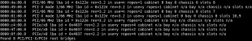
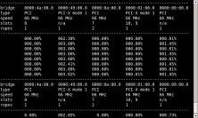

PCITOP -- a PCI bus utilization monitoring tool
Description
The PCITOP package is used to monitor PCI bus utilization. It pokes and prods counters in the root bridge chipsets found in a system, parses the data, and produces a display showing utilization as a percentage for each root bridge. Note that the tool does not show bandwidth, just the ratio of use to the maximum use possible.
-- Andrew Patterson<>
Features
- Measures PCI, PCI-X, and PCIe bus utilization.
- Sampling interval can be set by the user.
- Filters can be used to only display specific buses, based on slots, PCI domains, and PCI bus numbers.
- Outputs useful PCI bus information.
News
| 2-Nov-08 | Pcitop 1.0.1 released. Cleaned up "-i" output. Now recognize slots behind switches/sub-bridges. Minor bug fixes. |
| 4-Aug-08 | Pcitop 1.0.0 released. Almost completely rewritten from the original, HP proprietary version. Pcitop project hosted at Berlios. Project renamed to pcitop. |
| 2-Feb-08 | mermon/pcimon 0.7 License changed from HP proprietary to GNU Public License (GPL) with permission from Hewlett-Packard Co. Kudos to HP for supporting open source. |
Download
| pcitop-1.0.1 |
Minor bug fixes. Cleaned up "-i" output. Now recognize slots behind switches/sub-bridges. | stable |
| pcitop-1.0.0 |
Initial public release. | stable |
Source archive
Source for the pcitop project is stored in a git repository. The project can be checked out using the following command:
For Read-only access:
git clone git://git.berlios.de/pcitop
For Read-Write access (project members):
$ git clone ssh://loginname@git.berlios.de/gitroot/pcitop
Or, if you just want to browse the code repository, try pcitop gitweb
Screenshots
| --info output. | ||
|  |
||
Utilization output. |
||
|  |
||
{kind=link}
{kind=link}
License
Copyright (C) 2007 Hewlett-Packard Co.
This program is free software; you can redistribute it and/or modify it under the terms of the GNU General Public License as published by the Free Software Foundation version 2 of the License.
This program is distributed in the hope that it will be useful, but WITHOUT ANY WARRANTY; without even the implied warranty of MERCHANTABILITY or FITNESS FOR A PARTICULAR PURPOSE. See the GNU General Public License for more details.
You should have received a copy of the GNU General Public License along with this program; if not, write to the Free Software Foundation, Inc., 675 Mass Ave, Cambridge, MA 02139, USA.
Mailing lists
There are three mailing lists for the Pcitop project: pcitop-changes, pcitop-announce, and pcitop-devel.
| pcitop-changes | Source code commits are copied to this list. | Subscribe/Archive |
| pcitop-announce | Announcements of new releases and general news. | Subscribe/Archive |
| pcitop-devel | General development discussion. | Subscribe/Archive |
Forums
For more interactive discussion, you can try the Pcitop forums.
| Open discussion | Anything related to the Pcitop project. | forum |
| Help | General help | forum |
Bugs
Found a bug in Pcitop? Report it at bugs. Please check to see if the bug has already been reported before submitting a new one.
Feature requests
Want a new feature added to Pcitop? Submit a feature request at feature requests. Please check to see if the feature has already been submitted before placing a new one.